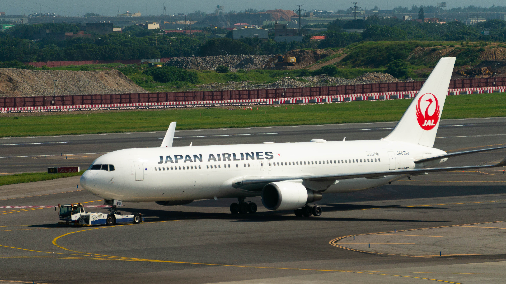

767-300ER (JAPAN AIRLINES)
Region : Japan
Spotted place : Taiwan Taoyuan International Airport (TPE/RCTP)
Gears : SONY NEX-6 ƒ/6.3 1/200 210 mm ISO 100

767-300ERF (FEDEX EXPRESS)
Region : USA
Spotted place : Taiwan Taoyuan International Airport (TPE/RCTP)
Gears : SONY NEX-6 ƒ/5.6 1/10 168 mm ISO 100